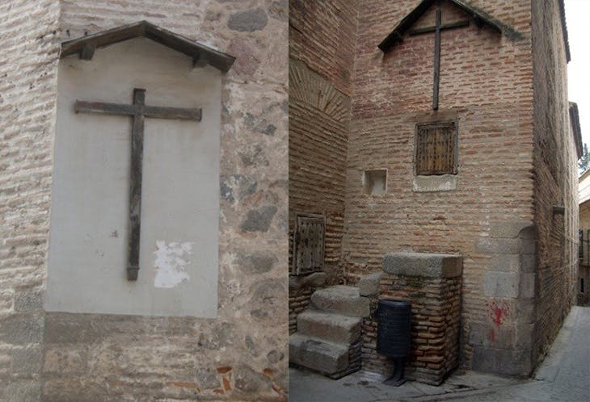
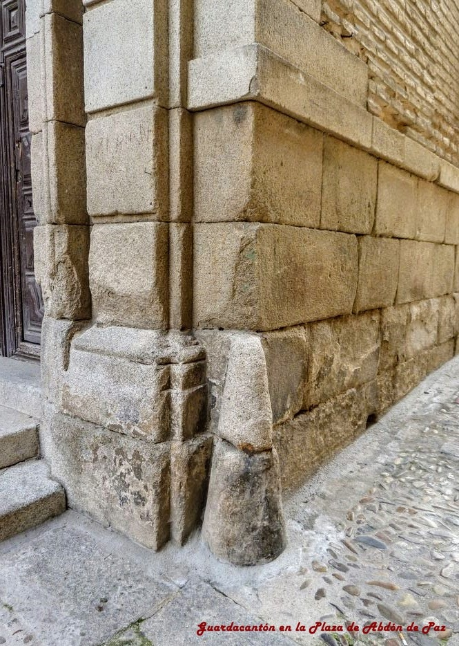
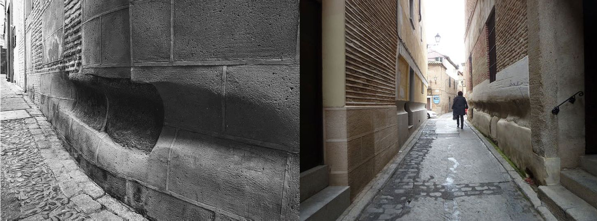
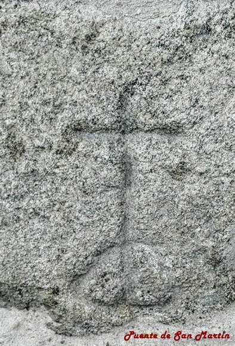
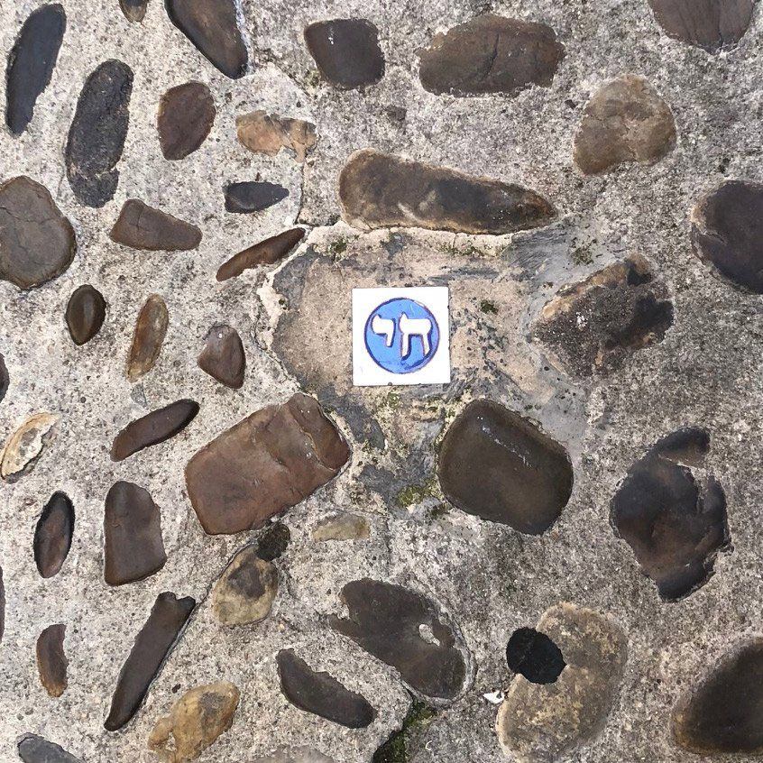
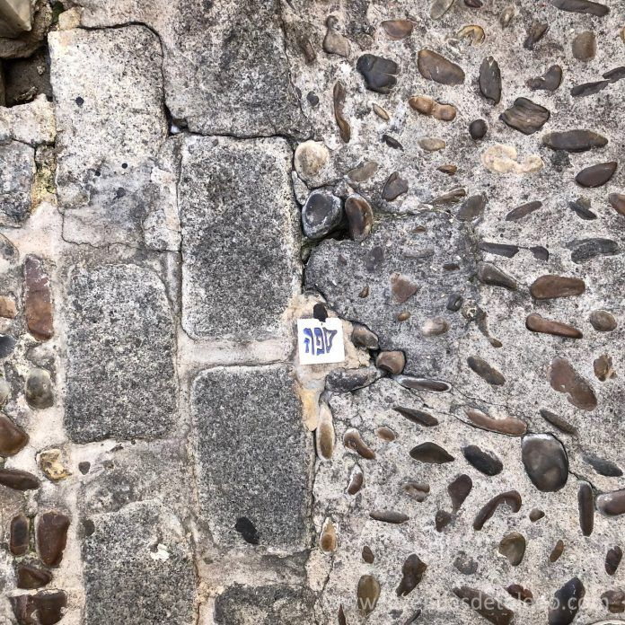
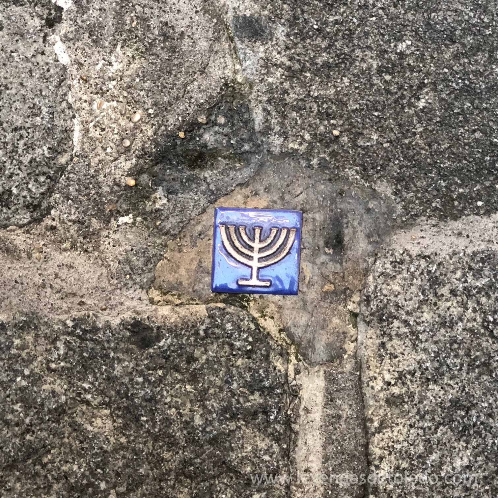

Viajes notas.:Los pueblos más bonitos de España.:
|
Pueblos Medievales.: |
|
Cáceres.:
Merece la pena visitar y conocer Cáceres, muralla Almohade con la impresionante Torre de Bujaco, aunque la historiografía dice que no pudo ser ahí la última resistencia, sino en la que actualmente está adosada al Palacio de Carvajal. Impresionantes palacios altomedievales y renacentistas, aljibes como el de Palacio de las Veletas o el de la Iglesia de los Jesuitas, la Torre de Los Pozos... Las Torres mochadas por apoyar a la Beltraneja y las que se salvaron de las represalias de Isabel de Castilla como la de Las Cigüeñas o Golfines... La Judería vieja... Y la Puerta romana del arco del cristo... Un patrimonio único Cáceres, lleno de historias y curiosidades... |
El palacio de Olite El Palacio Viejo
Las construcciones más antiguas del palacio de Olite corresponden al edificio que hoy suele denominarse Palacio Viejo, reconvertido en el siglo XX en Parador Nacional.
Su planta obedece a fórmulas habituales desde el siglo XIII: un recinto cuadrangular con patio central, dependencias ubicadas en naves anejas a los muros y torres en las esquinas.
Olite no se ajusta al modelo más regular, dado que las torres del Palacio Viejo difieren en planta y altura.
En la parte inferior de algunos muros todavía se reconoce el aparejo almohadillado de la fábrica más antigua.
Una de las torres cuenta con una estancia cubierta por bóveda de crucería en planta baja, erigida mucho tiempo antes de la intervención de Carlos III.
Nada más llegar al trono, el rey Noble (1387-1425) emprendió labores de mejora en el Palacio Viejo, donde estuvieron inicialmente tanto su cámara privada como el principal salón de recepciones,
la llamada “cámara luenga”, que vio renovadas sus ventanas hacia 1413. Aunque restauradas, todavía podemos contemplarlas en la parte septentrional de la fachada que da a la actual
Plaza de los Teobaldos. En su labra intervino Pedro Jalopa, un importante arquitecto y escultor venido de Francia que trabajó a lo largo de la primera mitad del siglo XV
en Barcelona, Zaragoza, Huesca, Palencia y Toledo. Las ventanas están decoradas con escudos del rey (cuartelado Navarra-Evreux) acompañados de divisas familiares y personales,
como el lebrel y las hojas de castaño. El interior del Palacio Viejo se encuentra totalmente transformado por la reconversión en Parador Nacional.
La intervención también alteró la ubicación de la pequeña puerta en arco apuntado, que en origen estuvo debajo de las ventanas, a eje con una antigua calle que conducía al palacio.
La actual plaza frontera tiene asimismo su origen en los primeros años del reinado de Carlos III, ya que fue él quien adquirió solares para dar mayor prestancia al conjunto residencial. Palacio Real de Olite Visita al "falso" castillo Notas.: tras el pavoroso incendio, provocado por Espoz y Mina, el 13 de febrero de 1813, quedó la estructura interna de prácticamente todo el conjunto. En 1869, Aniceto Lagarde, pudo levantar planimetria de los restos y de los arcos que cerraban el patio, por occidente, trabajo que luego utilizó Iturralde y Suit, para su exposición de los restos, ese mismo año. Las cuatro paredes externas, estaban completas y se conservaba casi toda la pared interior sur y la planta baja de la oriental. Esto fue así, hasta que los de Ezpeleta, fueron devorando, como las termitas, lo que quedaba dentro. Los vecinos, acabaron de rematar, hasta que fue adquirido por la Diputación de Navarra y convocó el concurso de reconstrucción, a principios del XX. Regino Borobio, realizó planetaria de los restos en planta y alzado y se conservaban de la primera, las cimentaciones de muros interiores y el empedrado del patio, bajo los escombros. Todo esto, fue arrasado por Paradores, reconstruyendo arbitrariamente la pared exterior sur y abriendo una puerta nueva en la base del Gálatas... los yesos que mencionas, se extendían hacia oriente (Galería de los Toronjales), a un cuerpo prismático hexagonal, que subía hasta la altura del miraglo nororiental de la Grand Tor; este elemento, fue eliminado por los Yárnoz en su reconstrucción, aunque en un dibujo de Villamil (1850) y en unas fotos previas a la restauración, realizadas desde el convento de los franciscanos, se aprecia perfectamente; de hecho, en el dibujo de Villamil, se pueden ver la continuación de los yesos, por el prisma. Por occidente, las yeserias, llegaban hasta la Gran Galería Dorada, de Maese Barbicano, ya que aún se ven las grapas de sujeción, pegadas a la pared. El programa decorativo del Palacio Nuevo, era muy espectacular y se sabe que existían yesos de lazos y representaciones geométricas y vegetales, en las cámaras principales. De hecho, la principal, se llama Cámara de los Lazos, en alusión al friso que precedía a la armadura del techo (erróneamente, se la llama actualmente cámara o dormitorio del Rey...). Otra muestra de decoración, conservada "in situ", son las rosas rojas que decoraban la torre del Retrayt Dorado, pintadas directamente sobre la pared; se trata de rosas de 5 pétalos, a semejanza del emblema de la Casa Lancaster. Se pueden ver 3. Un fragmento de hoja de castaño, fue encontrado en unas excavaciones en la Capilla de San Jorge y se tiene también noticia, de un fragmento de vidrio templado, que formaba parte de la vidriera que cerraba la ventana de la Torre del Fenero o de Sobre el Portal, aunque actualmente, está desparecido. En el guardarropa, se exponen algunos de los ladrillos vidriados, que decoraban algunos chapiteles de las torres (en las casas del pueblo, hay más...) Por cierto, otro invento de Paradores, es colocar la escalera justo en la zona en la que se ubicaba la Cort; una gran sala de fiestas y recepciones, en el Palacio Viejo, cuando la escalera original, estaba en la Torre de los Picos... .:Comentario de Tomás V. Alonso Santos |
|
Toledo | Símbolos en las Piedras de Toledo..: CRUCES EN LAS PAREDES. En plena calle es frecuente toparnos con cruces de madera clavadas en la pared de un templo. En la mayoría de los casos nos indica que detrás de ese muro se encuentra el altar de un convento o iglesia. En épocas pasadas el transeúnte al pasar por estos enclaves lo hacía con respeto y espiritualidad. En otras ocasiones, estas cruces nos cuentan que detrás de esas paredes hay una capilla dedicada a Jesús. O simplemente están colocadas en lugares donde se conjetura que hubo algún acontecimiento milagroso. Convento de las Capuchinas en la calle Aljibes (foto dcha.) ESFERAS MACIZAS DE PIEDRA. Estas esferas eran los extintores de épocas pasadas. Las casas que tenían en sus muros estos elementos nos indicaban que en su interior había un aljibe o un pozo. Cuando se producía un incendio, toda la población acudía a estas viviendas para utilizar el agua con el que sofocarlo. GUARDACANTONES. Son postes de piedra redondeados colocados en las esquinas de los edificios que servían para resguardar a estas viviendas de los roces de los carruajes. Esta costumbre se conservó en las poblaciones modernas hasta la aparición de las aceras. En Toledo que conserva la estrechez y sinuosidad en sus calles es muy frecuente encontrarnos todavía con muchos de ellos. Guardacantón Plaza Abdon de Paz GUARDA EJES. Son los rebajes realizados en las paredes de los edificios, para evitar sobre ellos el roce de los ejes de las ruedas de los carros. En realidad el objetivo principal era proteger a los carros. Estos rebajes se sitúan a una distancia de entre 60 y 80 cm. del suelo. La razón de este elemento lo tenemos que buscar nuevamente en la dificultad del paso de los carruajes por calles y callejones tan estrechos como los de Toledo. Calle Aljibillos (foto izda.) CRUCES TUMULARIAS. Son cruces labradas en la piedra que en algunas ocasiones van acompañadas de un túmulo (tumba). Se colocaban cuando en ese lugar había ocurrido una muerte trágica, normalmente debido a la celebración de duelos a espada. Los familiares del fallecido en estas condiciones no podían celebrar misa por el difunto, ni le podían enterrar en los cementerios, por lo que colocaban esta cruz en el lugar donde se había producido la muerte, para que el que pasase por allí rezase por la salvación del difunto. Están colocadas normalmente en las afueras o en sitios recónditos de la ciudad. Curiosamente, en el siglo XXI es frecuente ver en las cunetas de las carreteras cruces pertenecientes a personas fallecidas en accidente de tráfico. Como los difuntos no pudieron confesar sus pecados antes de su inesperada muerte, los familiares colocan estas cruces con la esperanza de que los que por allí circulemos podamos rezar por el alma del finado.  Puente de San Martín |
Judería  Jai (vida) La palabra hebrea vida (jai) en la judería de Toledo. El símbolo de la palabra hebrea Jai (vida) tiene un gran significado para el judaismo pues se centra mucho en la vida. Está compuesto en hebreo con los caracteres Jet Yod.  Sefarad. Símbolo de la Red de Juderías de España El perfil de la Península Ibérica, formado con la palabra Sefarad en hebreo. La Red de Juderías de España es una asociación pública sin ánimo de lucro que tiene como objetivo la defensa del patrimonio urbanístico, arquitectónico, histórico, artístico y cultural de legado sefardí en España.  La Menorá La Menorá (en hebreo: ?????, lit. «lámpara») o el Candelabro de los Siete Brazos: en la tradición judía, es uno de los elementos rituales esenciales del judaísmo y uno de sus símbolos más antiguos. La Menorá es simbólica del espíritu de Yaveh. Su luz simboliza la presencia de Dios entre los hombres, aunque también representa al arbusto en llamas que Moisés vio en el desierto. La tradición cuenta que la Menorá original estuvo en el Templo de Jerusalem. En el saqueo del Segundo Templo de Salomón en el año 70 D.C., los romanos se llevaron como trofeo de guerra la Menorá a Roma, hecho que atestigua el bajorelieve del Arco de Tito, construido en el año 82 en Roma. Curiosidades calles Toledo Recorreremos rincones de la ciudad a los que no llega el turismo masivo y paseando por sus calles medievales conoceremos sus leyendas e historias de amor: Los amores de Alfonso VIII y la judía de Toledo, la triste historia del pozo amargo o la del Cristo de las cuchilladas. Y es que una ciudad tan antigua y enigmática como Toledo y que ha inspirado a artistas como Becquer sabe mucho de historias de amor. En su milenaria existencia ha visto como los seres humanos se han batido en duelo, han perdido reinos e incluso han recurrido a las artes oscuras por amor. Museo del Greco, situado en el barrio de la judería, sobre los cimientos de un palacio renacentista y de una casa del siglo VI cercanos a la que fue la vivienda del artista que mejor supo captar el alma de Toledo. Catedral de Santa María, única en España, solo superada en tamaño por la de Sevilla, que ostenta el título de Catedral Primada de España, y es una espectacular pieza de la arquitectura gótica. |
|
Visita Roma.:
Circo Máximo Coliseo Vaticano y San Pedro foro Romano y la colina palatina |
Vestíbulo de la estación de Pacífico |